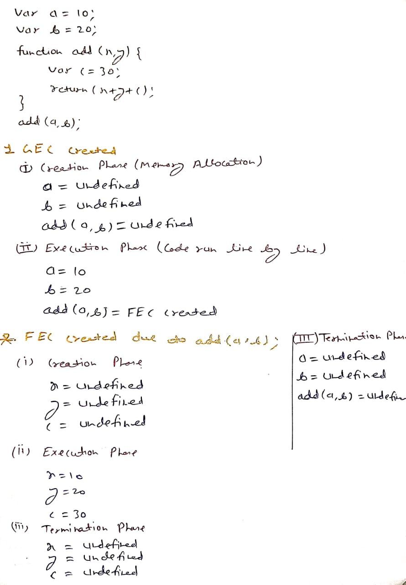

Code Execution Context in JavaScript
The Code Execution Context is the environment in which the JavaScript code runs. It defines what variables, functions, and objects are accessible, and determines how the code executes.
Types of Execution Context
- Global Execution Context (GEC): The default context where JavaScript code runs initially.
- Function Execution Context (FEC): Created whenever a function is invoked, containing its own scope and variables.
- Eval Execution Context (EEC): Created by the
eval() function for dynamic code execution.
Execution Context Lifecycle
Each context passes through the following phases:
- Creation Phase: Variables and functions are hoisted, and scope is established.
- Activation Phase: Code executes, variables initialize, and
this is defined.
- Termination Phase: Context is destroyed, freeing up memory.
Global Execution Context (GEC)
The GEC is created when JavaScript begins executing. It’s the outermost context.
Characteristics:
- Only one GEC per program.
- Global variables are accessible everywhere.
- Associated with the window object in browsers.
Function Execution Context (FEC)
Each time a function is invoked, a new FEC is created for it.
Characteristics:
- Each function call has its own FEC.
- Variables inside are private (local scope).
- Supports closures — inner functions can access outer variables.
Eval Execution Context (EEC)
Created when using eval() for dynamic code execution.
Characteristics:
- Scope determined at runtime.
- Can access outer variables.
- Potential security risk if used improperly.
Call Stack
The Call Stack keeps track of all execution contexts.
It follows a LIFO (Last In, First Out) order.
When a function is called → new context pushed onto the stack.
When it finishes → it’s popped off the stack.

Key Notes
- Only one Global Execution Context exists per program.
- A new Function Execution Context is created per function call.
- The Call Stack tracks and manages all contexts.